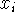
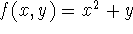
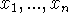
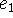
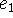
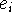

Suppose we are given a base collection  of functions (including predicates) having certain
domains and ranges. In the case of the non-negative integers, we may
have the successor function and the predicate of equality, and in the
case of the S-expressions discussed in reference 7, we have the five
basic operations. Our object is to define a class of functions
{
of functions (including predicates) having certain
domains and ranges. In the case of the non-negative integers, we may
have the successor function and the predicate of equality, and in the
case of the S-expressions discussed in reference 7, we have the five
basic operations. Our object is to define a class of functions
{  }
which we shall call the class of functions computable in terms of
}
which we shall call the class of functions computable in terms of  .
.
Before developing {  } formally, we wish to give an example,
and in order to give the example, we first need the concept of
conditional expression. In our notation a conditional expression has
the form
} formally, we wish to give an example,
and in order to give the example, we first need the concept of
conditional expression. In our notation a conditional expression has
the form
which corresponds to the ALGOL 60 reference language (12) expression
Here are propositional expressions taking the values T or F standing for truth and falsity respectively.
The value of is the value of the e corresponding to the first p that has value T. Thus
(4 < 3 7, 2 > 3 8, 2 < 3 9, 4 < 5 7) = 9.
Some examples of the conditional expressions for well known functions are
and the triangular function whose graph is given in figure 1 is represented by the conditional expression
Now we are ready to use conditional expressions to define functions recursively. For example, we have
Let us evaluate 2! according to this definition. We have
The reader who has followed these simple examples is ready for
the construction of  which is a straightforward generalization of
the above together with a tying up of a few loose ends.
which is a straightforward generalization of
the above together with a tying up of a few loose ends.
Some notation. Let  be a collection (finite in the examples
we shall give) of functions whose domains and ranges are certain
sets.
be a collection (finite in the examples
we shall give) of functions whose domains and ranges are certain
sets.  will be a class of functions involving the same sets which
we shall call computable in terms of
will be a class of functions involving the same sets which
we shall call computable in terms of  .
.
Suppose f is a function of n variables, and suppose that if we write , each  takes values in the set  and y takes its
value in the set V. It is customary to describe this situation by
writing
and y takes its
value in the set V. It is customary to describe this situation by
writing
The set of n-tuples  is called the domain of
f, and the set V is called the range of f.
is called the domain of
f, and the set V is called the range of f.
Forms and functions. In order to make properly the definitions that follow, we will distinguish between functions and expressions involving free variables. Following Church [1] the latter are called forms. Single letters such as f, g, h, etc. or sequences of letters such as sin are used to denote functions. Expressions such as f(x,y), are called forms. In particular we may refer to the function f defined by  . Our definitions will be written as though all forms involving functions were written f(,...,) although we will use expressions like x + y with infixes like + in examples.
Composition. Now we shall describe the ways in which new functions are defined from old. The first way may be called (generalized) composition and involves the use of forms. We shall use the letters x,y,... (sometimes with subscripts) for variables and will suppose that there is a notation for constants that does not make expressions ambiguous. (Thus, the decimal notation is allowed for constants when we are dealing with integers.)
The class of forms is defined recursively as follows:
(i) A variable x with an associated space U is a form, and with this form we also associate U. A constant in a space U is a form and we also associate U with this form.
(ii) If are forms associated with the spaces respectively, then is a form associated with the space V. Thus the form f(g(x,y),x) may be built from the forms g(x,y) and x and the function f.
If all the variables occurring in a form e are among  , we can define a function h by writing . We shall assume that the reader knows how to compute the values of a function defined in this way. If are all the functions occurring in e we shall say that the function h is defined by composition from . The class of functions definable from given functions using only composition is narrower than the class of function computable in terms of these functions.
Partial functions. In the theory of computation it is necessary to deal with partial functions which are not defined for all n-tuples in their domains. Thus we have the partial function minus, defined by minus (x,y) = x-y, which is defined on those pairs (x,y) of positive integers for which x is greater than y. A function which is defined for all n-tuples in its domain is called a total function. We admit the limiting case of a partial function which is not defined for any n-tuples.
The n-tuples for which a function described by composition is defined is determined in an obvious way from the sets of n-tuples for which the functions entering the composition are defined. If all the functions occurring in a composition are total functions, the new function is also a total function, but the other processes for defining functions are not so kind to totality. When the word ``function'' is used from here on, we shall mean partial function.
Having to introduce partial functions is a nuisance, but an unavoidable one. The rules for defining computable functions sometimes give computation processes that never terminate, and when the computation process fails to terminate, the result is undefined. It is well known that there is no effective general way of deciding whether a process will terminate.
Predicates and propositional forms. The space of truth values whose only elements are T (for truth) and F (for falsity) has a special role in our theory. A function whose range is is called a predicate. Examples of predicates on the integers are prime defined by
and less defined by
We shall, of course, write x < y instead of less(x,y). For any space U there is a predicate of two arguments defined by
We shall write x = y instead of , but some of the remarks about functions might not hold if we tried to consider equality a single predicate defined on all spaces at once.
A form with values in such as x < y, x = y, or prime(x) is called a propositional form.
Propositional forms constructed directly from predicates such
as prime(x) or x < y may be called simple. Compound
propositional forms can be constructed from the simple ones by means
of the propositional connectives and  . We shall
assume that the reader is familiar with the use of these connectives.
. We shall
assume that the reader is familiar with the use of these connectives.
Conditional forms or conditional expressions. Conditional forms require a little more careful treatment than was given above in connection with the example. The value of the conditional form

is the value of the e corresponding to the first p that has value T; if all p's have value F, then the value of the conditional form is not defined. This rule is complete provided all the p's and e's have defined values, but we need to make provision for the possibility that some of the p's or e's are undefined. The rule is as follows:
If an undefined p occurs before a true p or if all p's are false
or if the e corresponding to the first true p is undefined, then
the form is undefined. Otherwise, the value of the form is the value of
the e corresponding to the first true p.
We shall illustrate this definition by additional examples:
The truth value T can be used to simplify certain conditional forms.
Thus, instead of
we shall write
The propositional connectives can be expressed in terms of conditional forms as follows:
Considerations of truth tables show that these formulae give the same results as the usual definitions. However, in order to treat partial functions we must consider the possibility that p or q may be undefined.
Suppose that p is false and q is undefined; then according to the conditional form definition is false and is undefined. This unsymmetry in the propositional connectives turns out to be appropriate in the theory of computation since if a calculation of p gives F as a result q need not be computed to evaluate , but if the calculation of p does not terminate, we never get around to computing q.
It is natural to ask if a function of 2n variables can be defined so that
This is not possible unless we extend our notion of function because
normally one requires all the arguments of a function to be given
before the function is computed. However, as we shall shortly see, it
is important that a conditional form be considered defined when, for
example,  is true and  is defined and all the other p's
and e's are undefined. The required extension of the concept of
function would have the property that functions of several variables
could no longer be identified with one-variable functions defined on
product spaces. We shall not pursue this possibility further here.
is true and  is defined and all the other p's
and e's are undefined. The required extension of the concept of
function would have the property that functions of several variables
could no longer be identified with one-variable functions defined on
product spaces. We shall not pursue this possibility further here.
We now want to extend our notion of forms to include
conditional forms. Suppose  are forms associated with the
space of truth values and are forms each of which is
associated with the space V. Suppose further that each variable
occurring in
are forms associated with the
space of truth values and are forms each of which is
associated with the space V. Suppose further that each variable
occurring in  and is associated with
the space U. Then is
a form associated with V.
and is associated with
the space U. Then is
a form associated with V.
We believe that conditional forms will eventually come to be generally used in mathematics whenever functions are defined by considering cases. Their introduction is the same kind of innovation as vector notation. Nothing can be proved with them that could not also be proved without them. However, their formal properties, which will be discussed later, will reduce many case-analysis verbal arguments to calculation.
Definition of functions by recursion. The definition
is an example of definition by recursion. Consider the computation of 0!
We now see that it is important to provide that the conditional form be defined even if a term beyond the one that gives the value is undefined. In this case (0 - 1)! is undefined.
Note also that if we consider a wider domain than the non-negative integers, n! as defined above becomes a partial function, since unless n is a non-negative integer, the recursion process does not terminate.
In general, we can either define single functions by recursion or define several functions together by simultaneous recursion, the former being a particular case of the latter.
To define simultaneously functions  , we write equations
, we write equations
The expressions must contain only known
functions and the functions  . Suppose that the ranges of
the functions are to be respectively; then we further
require that the expressions be associated with these
spaces respectively, given that within the f's are
taken as having the corresponding V's as ranges. This is a
consistency condition.
. Suppose that the ranges of
the functions are to be respectively; then we further
require that the expressions be associated with these
spaces respectively, given that within the f's are
taken as having the corresponding V's as ranges. This is a
consistency condition.
 is to be evaluated for given values of the x's as follows.
is to be evaluated for given values of the x's as follows.
1. If  is a conditional form then the p's are to be evaluated in the prescribed order stopping when a true p and the corresponding e have been evaluated.
2. If has the form , then are to be evaluated and then the function g applied.
3. If any expression occurs it is to be evaluated from the defining equation.
4. Any subexpressions of that have to be evaluated are evaluated according to the same rules.
5. Variables occurring as subexpressions are evaluated by giving them the assigned values.
There is no guarantee that the evaluation process will terminate in any given case. If for particular arguments the process does not terminate, then the function is undefined for these arguments. If the function occurs in the expression , then the possibility of termination depends on the presence of conditional expressions in the 's.
The class of functions  computable in terms of
the given base functions
computable in terms of
the given base functions  is defined to consist of the
functions which can be defined by repeated applications of the above
recursive definition process.
is defined to consist of the
functions which can be defined by repeated applications of the above
recursive definition process.